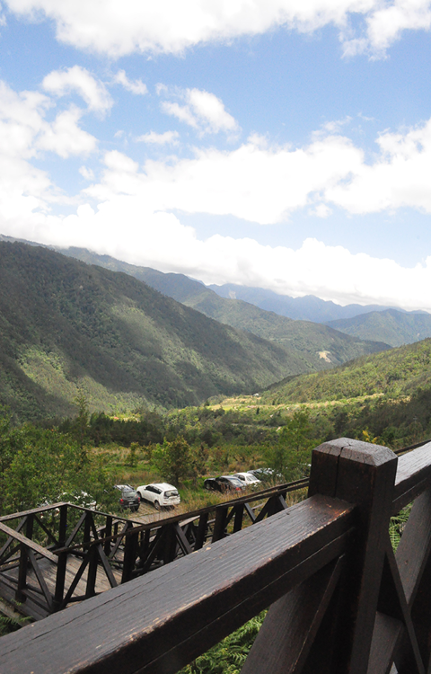
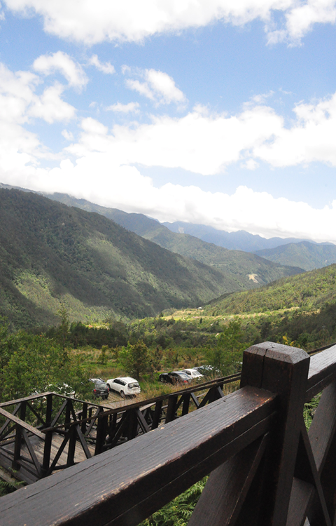

Name: Haoran Miao
Student No: 301542189
Date: 2024-10-26
I have not cheated in any way when doing this assignment, I did it on my own. I may have asked questions about the assignment on Coursys, I know that’s totally fine and even encouraged. I also already know that this class is graded on a curve. I realize that if I cheat and by some miracle not get caught, any increase in my grade will in turn shift the curve and result in lower grades for my classmates. Any undeserved extra grade would come at the cost of all others. That’s horrible! I would never do it.
 

The FastR detector eliminated lots of weak edge and corner points such as lines on the leaves of the plant, branches of the tree, detalis of every leaf. FASTR, after thresholding, has a sparser point distribution compared to FAST. Points in low-contrast regions, areas with noise or fine-grained texture, and less pronounced edges and corners are more likely to be discarded. Thresholding helps reduce false positives but also discards potentially useful information.

I used ORB for the descriptor, it did not have a good affect for the S1 image as it eliminated lots of key points for FastR For the S1 images, after all the threshold tested, this is the best result, as other threshold will have not points detected for FASTR However on S2 the edges were mostly kept and were acurate corner matching between the two images.
I did 99.9 cofidence interval and 2000 iterations, with less confidence interval could get white blank areas that are not stitched well With low iteration, the image is not well stitched. I found the Fast points it self to be better than FASTR in stitching, Due to FASTR eliminating some useful strong points.